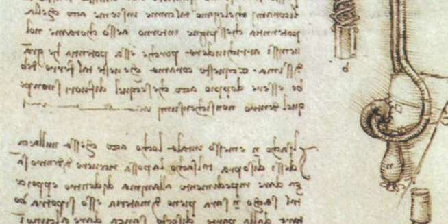
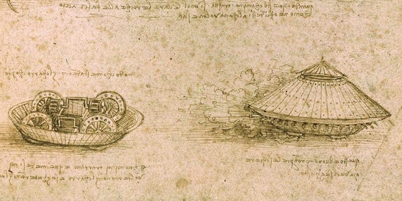
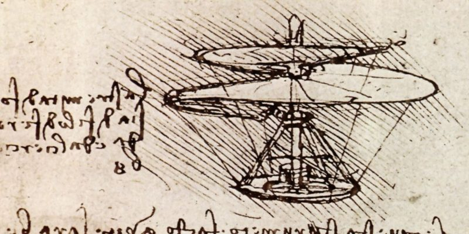
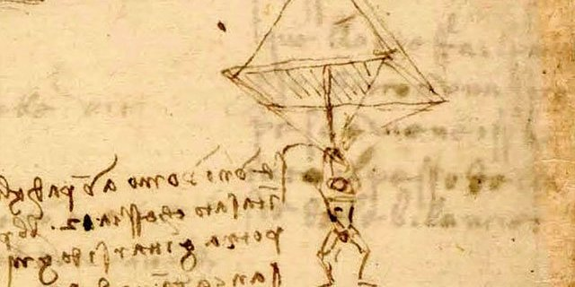
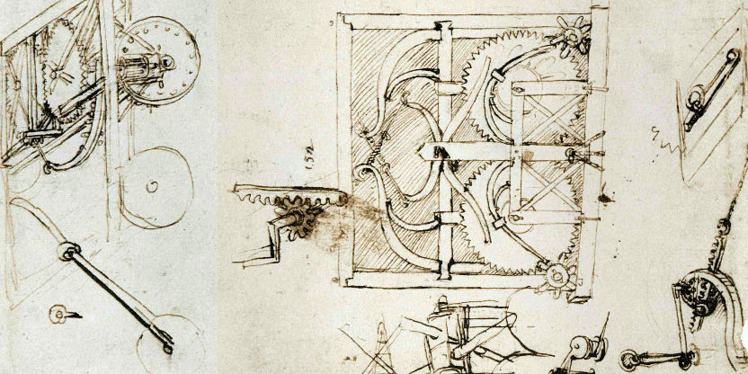

Действительно, завоевав признание своей живописью, Леонардо увлекся наукой. Он был прирожденным экспериментатором, ничего не принимал на веру. В сферу его интересов входили и точные, и естественные науки. И нет практически ни одной области, в которой он не высказал бы смелые догадки. Физика, астрономия, химия, география, архитектура — Леонардо интересовало все.
Но если перечислять все, что создал да Винчи, получится, что на практике далеко не все его изобретения были реализованы и не все идеи подтверждены экспериментально. Многие так и остались идеями на бумаге. А часть его замыслов получила совсем другое техническое воплощение — с уже современными материалами и технологиями.
В социальных сетях регулярно появляются фантастические истории изобретений Леонардо да Винчи, не имеющие ничего общего с реальностью. Но это не делает идеи самого художника менее интересными.
Хотя сам он говорил, что уподобляется «тому, кто по своей бедности явился на ярмарку последним, когда всё лучшее уже разобрано, а оставшееся всеми перепробовано и отвергнуто за ненадобностью», и остается только собрать эти крохи в котомку, на самом деле котомка художника была полна настоящих сокровищ. Многие его идеи просто опередили свое время.
6 удивительных изобретений Леонардо да Винчи, которые опередили своё время
Водолазный костюм из натуральной свиной кожи
Некоторое время да Винчи жил в Венеции. А на этот город давненько точила зубы Османская империя — и флот у неё был более чем устрашающий. Сами понимаете, от таких суровых ребят венецианские гондольеры на своих утлых посудинах вёслами вряд ли отбились бы.
Да Винчи с радостью предложил городскому правлению свои услуги военного консультанта и инженера. Художник изобрёлL. da Vinci, J. P. Richter, R. C. Bell. The Notebooks of Leonardo Da Vinci невероятное для XV века устройство — водолазный костюм, или «скафандр» (итал. scafandro).
Он был сделан из кожи, укреплён стальными кольцами, чтобы противодействовать давлению воды, и снабжался дыхательной маской со стеклянными окулярами.
Было два варианта скафандра: с бутылками вроде винных, где предполагалось держать запас воздуха, и с тростниковыми трубками, которые торчали на поверхности. О том, как нагнетать воздух в бутылки без устройства для его сжатия (его придумает только Бенуа Рукейроль в 1866 году), да Винчи как-то не подумал. Но зато костюм дополнительно комплектовался воздушным пузырём. С его помощью можно было регулировать уровень плавучести и погружаться на дно либо всплывать при необходимости.
К сожалению, магистрат Венеции не оценил по достоинству проект, и его члены, посоветовавшись, выдали что-то вроде: «Знаете, мы тут решили попробовать переговоры». В итоге отряды итальянского морского спецназа не были сформированы, с турками помирилисьN. Itzkowitz. Ottoman Empire and Islamic Tradition на их условиях, а слава изобретателя первого в мире акваланга досталась Огюсту Денейрузу только в XIX веке.
Тактический боевой танк из дерева
Когда Лео в 1487 году просился на службу к герцогу Людовико Сфорца, то накатал ему избавленное от ложной скромности резюмеLeonardo da Vinci’s Hand-Written Resume Will Make You Feel Inadequate / Gizmodo. В числе прочего он там обещал его светлости построить ни много ни мало танк.
Под повозкой да Винчи подразумевалL. da Vinci, J. P. Richter, R. C. Bell. The Notebooks of Leonardo Da Vinci первый в мире танк. По задумке он был круглым (конструкция была вдохновлена панцирем черепахи) и собирался из тяжёлых деревянных досок, обшитых железом для защиты от огнестрельного оружия
По окружности могучей военной машины располагались бойницы с лёгкими пушками, чтобы обстреливать поле боя на все 360°. Дна у танка не было — экипаж должен был ходить пешком. Уже в XV веке Лео предвидел, что сидячий образ жизни до добра не доведёт
Внутрь можно было засунуть до восьми человек, служивших операторами орудий, и ещё двоих мехводов. Последние крутили валы, приводившие в движение четыре колеса сего агрегата. На секундочку: эти атлеты за счёт одних своих бицепсов должны были возить по пересечённой местности 2–3 десятка лёгких бронзовых пушек, боезапас к ним и саму эту тачанку, которая тоже прилично так весила.
Сфорца посмотрел на эту неостановимую машину убийства, сказал: «Лео, выглядит круто, но давай как-нибудь потом». И проект так и остался на бумаге.
Когда в 2010 году энтузиасты воспроизвели уменьшенную модель танка, то обнаружили, что да Винчи неправильно изобразил на чертеже зубчатую передачу. И в результате передние и задние колёса вращаются в разные стороны. Так что сколько ни крути валы, бронемашина будет на месте буксовать.
Вертолёт с несущим винтом из накрахмаленной материи
Строго говоря, принцип работы этой штуковины придумал не Леонардо. Вот эта вращающаяся круглая спираль — так называемый архимедов винт. Считается, что учёный изобрёлB. A. Stewart, T. Howell. Encyclopedia of Water Science его примерно в 250 году до н. э. Винт использовался греками и римлянами, чтобы поднимать в гору воду по наклонным трубам.
Однако, видимо, именно Леонардо первым в Европе додумался, что в воздухе архимедово устройство тоже будет работать. В 1493 году он создал проект летающего аппарата, смахивающего на вертолёт или, скорее, на автожир. Диаметр винта этого агрегата составил бы 4 метра.
Леонардо отметил в комментариях к эскизу, что винт следует изготовить из накрахмаленной льняной ткани, поддерживаемой проволокой на тростниковом каркасе. Более того, есть данные, что он создал уменьшенную модель устройства и заставил её подниматься в воздух, но до наших дней она не сохранилась.
Парашют, который также может служить палаткой
Что делать, если во время полёта экипаж устанет крутить вал и аппарат начнёт падать? Леонардо всё предусмотрел. Нужно всего-навсего покинуть машину в воздухе, выпрыгнув с парашютом.
Итальянский художник придумалL. da Vinci, J. P. Richter, R. C. Bell. The Notebooks of Leonardo Da Vinci девайс для безопасного падения с высоты за 300 с лишним лет до того, как это пришло в голову официальному создателю парашюта — французскому изобретателю Себастьяну Ленорману.
Если у человека имеется палатка из накрахмаленного полотна, каждая сторона которой имеет 12 локтей (около 6,5 м) в ширину и столько же в высоту, он может броситься вниз с любой высоты, не подвергая себя при этом ни малейшей опасности. «Атлантический кодекс».
И правда, устройство похоже на палатку. Если посередине воткнуть шест для поддержания формы, там и от дождя укрыться можно. 26 июня 2000 года британский воздухоплаватель Адриан Николас сделал точную копию парашюта да Винчи, поднялся на высоту 3 километров на воздушном шаре и прыгнул. И что бы вы думаете — сработало! Этот камикадзе вполне уверенно пролетел большую часть спуска на изобретении Леонардо.
Правда, на отметке в 600 метров Николас срезал стропы и остаток пути проделал на современном парашюте.
Дело в том, что, упоминая про отсутствие «малейшей опасности» в своих записях, Леонардо немного покривил душой. Его разработка, сделанная из досок и холста, весила порядка 84 килограммов. Если такая штука при приземлении накроет, даже самый опытный десантник не обойдётся без травм.
Автомобиль на пружинном ходу
Видимо, в какой-то момент Леонардо решил, что танки и вертолёты, которые работают на рычажной и педальной тяге, далеко не уедут. В конце концов, машина должна везти человека, а не наоборот.
Оставалось понять, каким образом придать аппарату запас хода. Бензинового или парового двигателя под рукой не было, а если вмонтировать в него лошадь или осла (естественные движки, работающие на сене) — так это простая телега получится, никакой интриги. Но Леонардо нашёл способ создать реально автономную систему
В телегу вставляем пару очень туго заведённых спиральных пружин в специальных барабанах — в дневниках да Винчи упоминал, что и одной пружины хватит, но он разместил две симметричные ради «приятной глазу гармонии». Вынимаем рычаг тормоза. Пружины начинают раскручиваться, через несложную передачу вращают колёса, и наш автомобиль едет вперёд.
В процессе разработки автомобиля, кстати, Леонардо придумал такую полезную вещь, как бесступенчатая трансмиссия, или тороидальный вариатор. Да Винчи надел три разные шестерни на общий вал, и тот получил возможность менять скорость вращения по необходимости.
В 1886 году конструкция была запатентована неким Милтоном Ривзом и сейчас успешно применяется в автомобилях, велосипедах, фрезерных пилах и ещё много где.
Многие идеи Леонардо да Винчи остались недоработанными. Он часто поступал так со своими творениями: начиная одну картину или набросок, бросал их незавершенными и более о них не заботился (за редкими исключениями).
Биограф Леонардо Софи Шово писала, что Леонардо оставил незавершенной собственную жизнь, сделав это исключительным талантом. Но именно непостоянство, свойственное художнику, и его склонность оставлять работы незавершенными, открывали перед его гением новые перспективы, вдохновлявшие и ученых будущего.